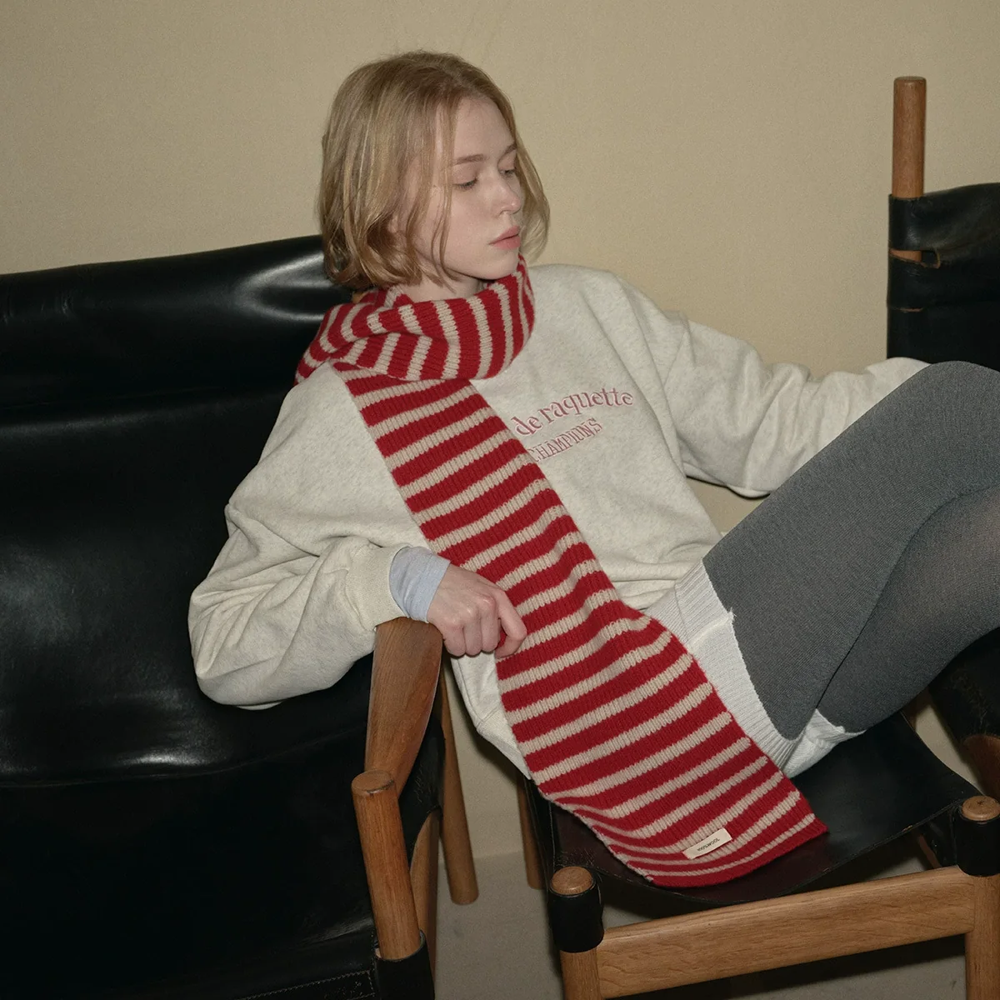
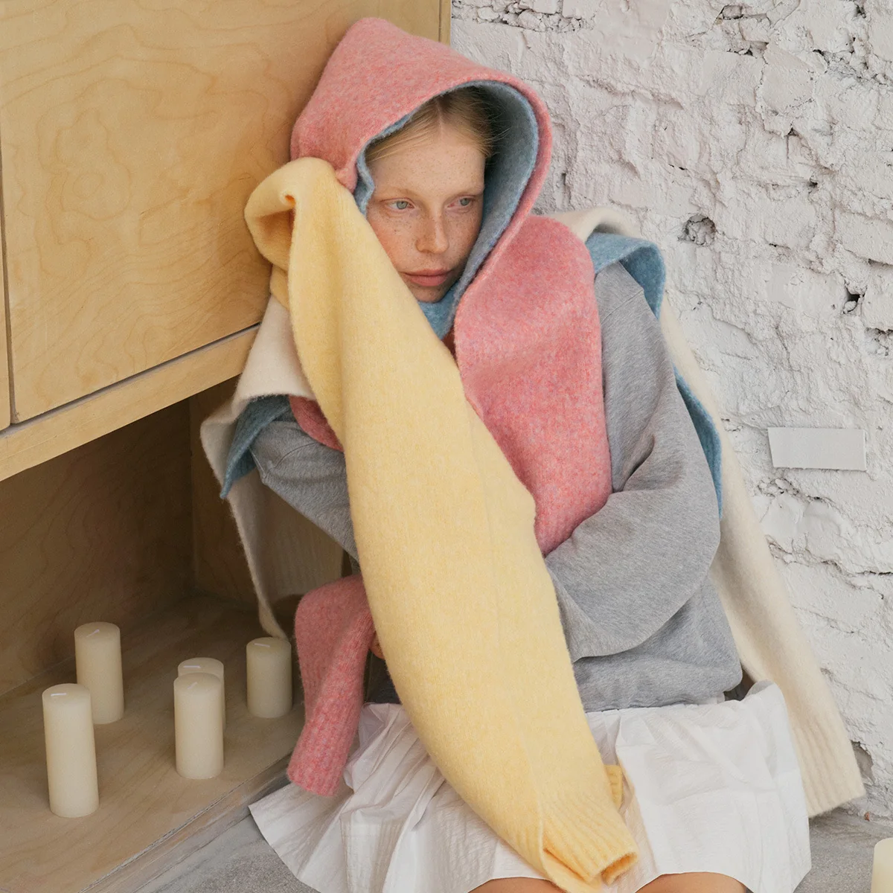

Objects for a colourful everyday.Mossyloom Journal / No. 01
Studio Notes
For the days
you dress like you.
01 / A note on getting dressedThe stripe edit

A familiar shape.A different rhythm.
try a stripeOne scarf.
One scarf.
A whole
new mood.
A stripe, a favourite jacket,
and you're out the door.
02 / On the pinboardThree finishing touches
An everyday
kind of special.
No complicated rules.
Just pieces to make your own.


03 / Pieces from the pagesYour own edit starts here
The studio edit.
